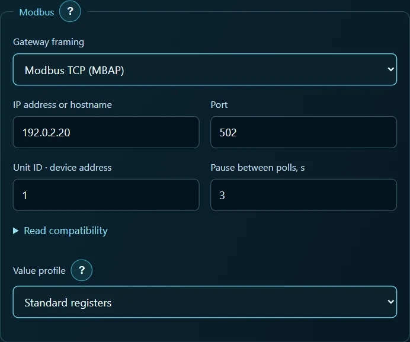
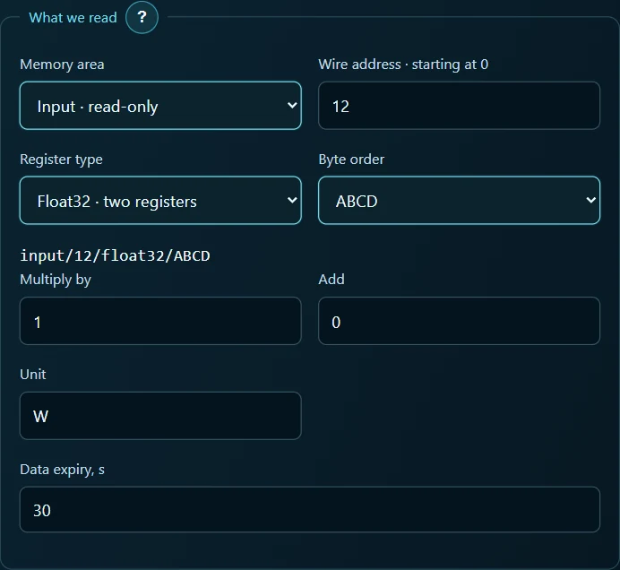
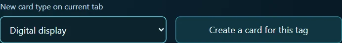
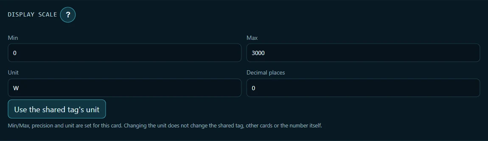
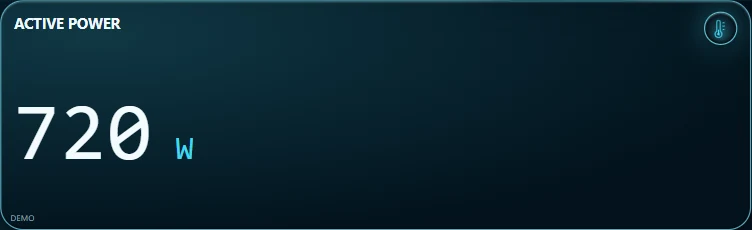

Read an Eastron SDM120 power meter on an Android tablet
I wanted to see the load in watts on a tablet. The SDM120-Modbus speaks RS-485, while the tablet is on Wi-Fi. A network gateway connects the two. This workshop reads one measurement, active power. You can also run the whole exercise with a practice server on a computer.
Choose a source · Gateway connection · Register settings · Create the display · Check the reading
1. Choose a data source
Using a meter. You need ARAAMA 0.1.10, an installed SDM120-Modbus, an Ethernet or Wi-Fi to RS-485 gateway, and access to its configuration. Look up the gateway's network address, listening port and framing mode, and the meter's bus address (Unit ID). Baud rate, parity and stop bits must match on the RS-485 side. The tablet needs network access to the gateway.
Using a computer. Download the practice meter and finished panel. Extract the archive on a computer with Python 3. In the directory containing simulate_meter.py, run the command below. Replace 192.168.1.20 with this computer's LAN address and connect the tablet to the same network.
python simulate_meter.py --bind 192.168.1.20 --port 1502 --watts 720
Keep the terminal open. The server answers Modbus TCP reads at Unit ID 1. To test a different value, stop it with Ctrl+C and restart it with --watts 350. For the finished display, export your current project in Settings → Projects, then open the supplied panel.json. To build the display manually, start on an empty practice screen. ARAAMA 0.1.10 and manuals
2. Configure the network connection
In Settings → Network, select the imported SDM120 connection. For a manual build, choose + Connection, enter SDM120 and select Modbus TCP. Set the gateway framing to match your equipment.
| Connection field | Practice server | Physical gateway |
|---|---|---|
| Gateway framing | Modbus TCP (MBAP) | MBAP for TCP-to-RTU conversion. Use Modbus RTU over TCP (RS-485) for a transparent serial bridge |
| Host | Computer address from the command above | Gateway IP address or host name |
| Port | 1502 | The port configured on the gateway, often 502 for MBAP |
| Unit ID | 1 | Meter's RS-485 address |
| Polling delay | 3 s | 3 s for this exercise |
| Profile / timeout | Generic registers / 5000 ms | Generic registers / 5000 ms for an initial test |

Select Save connection. The host identifies the gateway. The Unit ID selects the meter behind it. The default maximum read size of 125 registers is sufficient here. One power reading occupies two adjacent registers.
3. Create the active power tag
Open Settings → Tags → + Tag. Enter Active power for the name, SDM120 for the connection and Read only for access. In the imported panel, open the existing Active power tag. Fill in the read settings:
| Field | Value |
|---|---|
| Memory area | Input, read only (function 04) |
| Zero-based packet address | 12 |
| Register type | Float32, two registers |
| Byte order | ABCD for Eastron's original byte order |
| Multiplier / offset | 1 / 0 |
| Unit / stale timeout | W / 30 s |
In this model's register map, 30013 — Active power has starting address 0x000C, decimal 12. ARAAMA asks for the packet address. Check the resulting address string input/12/float32/ABCD and select Save tag. Eastron register map, page 5

4. Create the digital display
In the saved Active power tag, open Used on screens. Select Digital display, then Create a card for this tag. Open the card parameters and use the title Active power, unit W and 0 decimal places. This card displays a number and needs no scale limits. The downloaded project already includes one display bound to the tag.


5. Compare the reading
Select Run and allow a polling cycle. With --watts 720, the expected reading is 720 W. Restart the practice server with --watts 350. Once the tablet reconnects, the same card should show 350 W.

For a physical meter, select active power on its display and compare the two readings under a steady load. For example, 0.72 kW on the meter corresponds to 720 W on the tablet. If the card is blank, check the IP address, port and Unit ID. If the device returns an address error, check Input, 12, two registers. If the magnitude is implausible, check Float32, the gateway's byte order and the tag multiplier.
Once you have a power reading, how do you compare two heating schedules? Try the overnight workshop experiment and compare full-day energy in kWh.